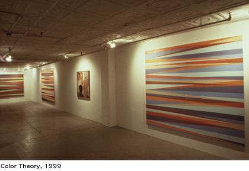
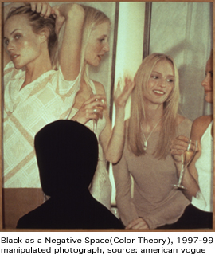
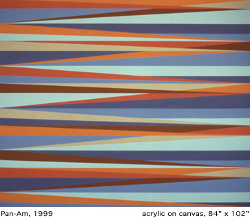

Color Theory was the title of Odili Donald Odita's first New York solo
exhibition held at Florence Lynch Gallery from October 16 to November14.
New paintings, mixed media works and digitally manipulated photographs
investigated the relationship between aesthetic traditions and cultural
codes through the language of colors. Born
in Enugu, Nigeria, and brought to America by his parents when he was
only six months old, right after the Biafran war, Odita was raised in
the Midwest assimilating important aspects of postmodern America, its
myths and cultural languages, from art to the movies and advertising.
With an educated African background, he came to live through the tension
and psychological devastation of being reduced to being black in a country
that defines identity according to race. The artist's strong sense of
Nigerian identity was kept alive by family traditions, through stories
told by his parents. in the collection of African art and artifacts
in his home, and through a constant reminding of his roots. With an
art historian for a father, Odita grew up reflecting upon two separate
layers of aesthetic understanding, one academic, the other instinctive,
one intrinsic in his birth language and roots, the other adopted and
learned through everyday culture, forming the relationship between ideology
of aesthetics and identity of space, which would become an important
aspect of his work. Racial and ethnic codes were fundamental signifiers
for the artist's perception of identity, intensified by a massive and
growing distribution and generalization of these codes throughout media-cultures.
Odita's work took an important turn when he moved to New York in the
early 1990s. The intensity of the city's fast-paced energy, its hypnotic
architecture of the spectacle with lights and giant billboards, with
mobile ads passing by on buses or through the trends of people, did
not spare any one from its gaze. The city of many cultures crammed together
was able to keep each culture distinct in language and tradition. The
assimilation of this separateness shared into the same space. or the
conceiving of different but integrated spaces, or even a hybridization
of the image are perhaps the most important aspects of his work. Its
process and concept combine a variety of tendencies, sometimes contradictory
sometimes complementary, such as the warmth and openness of his African
palette in contrast to the striking colors of American-suburbia represented
in his paintings, or the distance and precision of more reductive structural
patterns in contrast to his fascination with light and space whether
physical or mental, whether through the rendering of repetitive diagonal
lines, or in the multi-layers of meaning implied in the more conceptual
aspect of his work.
"Black
as a Negative Space," (1997-99), is a digitally manipulated photograph
of a typical fashion magazine scene with three models posing for a shot.
The picture also depicts a black silhouette, which stands out in relation
to the soft background. The cutout or negative space of the photo, here
scanned into a much larger size, reflects the influences of advertising
and commerce. of cut and paste strategies in the substituting and selling
of cultural information, and the obliteration of a "negative"
identity, the identity of the other. The pattern, represented by repetitive
codes such as the similarities in the appearance of the models, or other
strategies of control is one of the many hegemonic schemes utilized
by advertising to promote a simplification in our comprehension of identity.
Most recently, the advertising industries have produced a more heterogeneous
set of codes, mixing different races and ethnicities in a trendy and
appealing look. Although New York's giant billboards promote a growing
cross-cultural diversity, is this really a sign of an empirical support
for multi-culturalism in the States, or is it part of a greater campaign,
the one that spreads Western codes throughout the world? The negative
or altered space of Odita's piece is the one whose identity is not represented
here, the outer edge of a group, the periphery. A similar idea although focusing more on the confrontation with the
viewer is the work entitled "The White Issue," (1997-99).
Made in a similar fashion of the former, "The White Issue"
depicts the front cover of Vogue, with a model in front of a landscape
which colors could be reminiscent of the reddish-brown tones of African
soil. Here, the artist continues to emphasize the metaphors schemed
by consumerism inviting the viewer to reflect upon its aesthetic and
illusive aspect, the opulence of visual satisfaction of other lands
and other realities camouflaged by the luscious artifices of advertising.
The frightening aspect implied by Odita's work is not only the inculcating
of unimaginative aesthetic codes by the fashion industry, but the apathy
of the viewer in their assimilation and consumption. To be allured by
these codes is also to endure a voyeuristic act of admiration for the
altered image represented by a pattern. This alienation and generalization
of sexuality disguised through the language of fashion and hegemonically
articulated through the advertising industry is not lesser a strategy
of manipulation and control over individual sexuality than the pornographic
industry's images. It also forms a clear link between sexual nihilism
and porn's billion dollar economy. A similar idea although focusing more on the confrontation with the
viewer is the work entitled "The White Issue," (1997-99).
Made in a similar fashion of the former, "The White Issue"
depicts the front cover of Vogue, with a model in front of a landscape
which colors could be reminiscent of the reddish-brown tones of African
soil. Here, the artist continues to emphasize the metaphors schemed
by consumerism inviting the viewer to reflect upon its aesthetic and
illusive aspect, the opulence of visual satisfaction of other lands
and other realities camouflaged by the luscious artifices of advertising.
The frightening aspect implied by Odita's work is not only the inculcating
of unimaginative aesthetic codes by the fashion industry, but the apathy
of the viewer in their assimilation and consumption. To be allured by
these codes is also to endure a voyeuristic act of admiration for the
altered image represented by a pattern. This alienation and generalization
of sexuality disguised through the language of fashion and hegemonically
articulated through the advertising industry is not lesser a strategy
of manipulation and control over individual sexuality than the pornographic
industry's images. It also forms a clear link between sexual nihilism
and porn's billion dollar economy.
Odita's paintings depicting diagonal layers of vivid colors such as
"Present Tense," "The Speed of Life," "Pan-Am,"
and "Open," all from 1999, deal with more than just structure
and rhythm. They
represent the aesthetic struggle between form and concept; or more specifically,
the dynamics of the aesthetic process against the immediate influences
of the psycho-social. These layers of colorful bliss are the bright
lights of the spectacle translated into space. Odita's paintings contain
contradictions in relation to more conceptual works, among them "The
White Issue" and "Black as a Negative Space." The paintings
have a feminine, almost lyrical quality evoked by the horizontal lines,
and a distance from the concept, although this is clearly present in
the limits of each color. The layers as conductors of color and light
cross the canvas on a continuous flow, in a decentralized web of possibilities
separated only by space. In these paintings, Odili Donald Odita permeates
an opening experience of escape and laughter, a trance into colors and
space.
Denise Carvalho
Denise Carvalho is an Art Critic and Independent Curator based in New
York.
This essay was originally published in NKA, Journal of Contemporary
African Art, No. 11/12, Fall/Winter 2000.
|